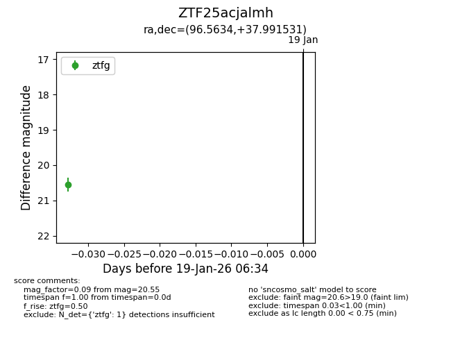
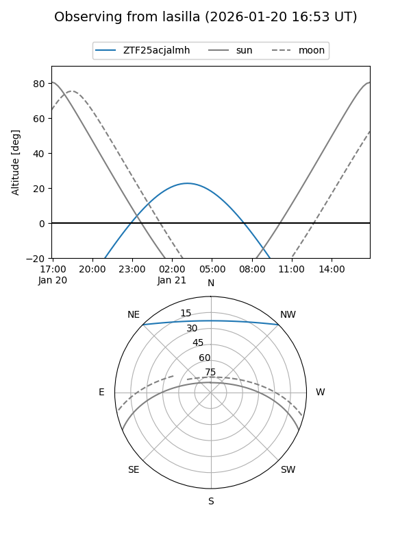
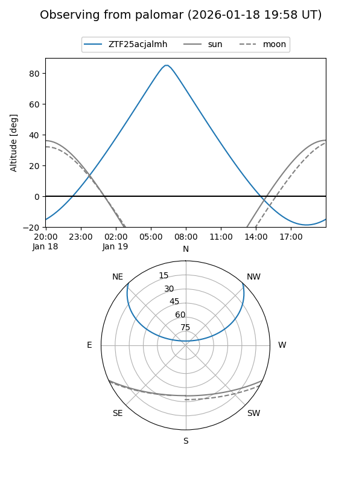

ZTF25acjalmh
Target ZTF25acjalmh at 2026-01-19 06:35
Aliases and brokers:
FINK: link
Lasair: link
ALeRCE: link
alt names
ZTF25acjalmh (ztf,fink_ztf)
Coordinates:
equatorial (ra, dec) = 96.5634,+37.99153
equatorial (HMS+DMS) = 06:26:15.21,+37:59:29.51
galactic (l, b) = (176.0748,+11.75683)
Flags:
Photometry:
last ztfg=20.55
1 ztfg detections
Lightcurve

Visibility


Additional plots